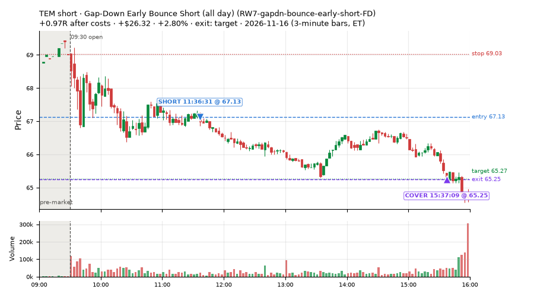
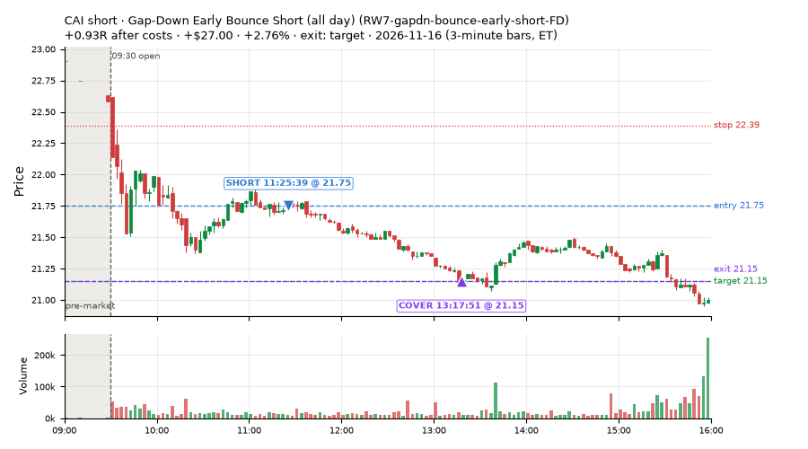
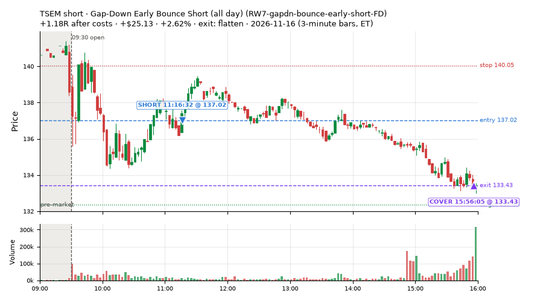
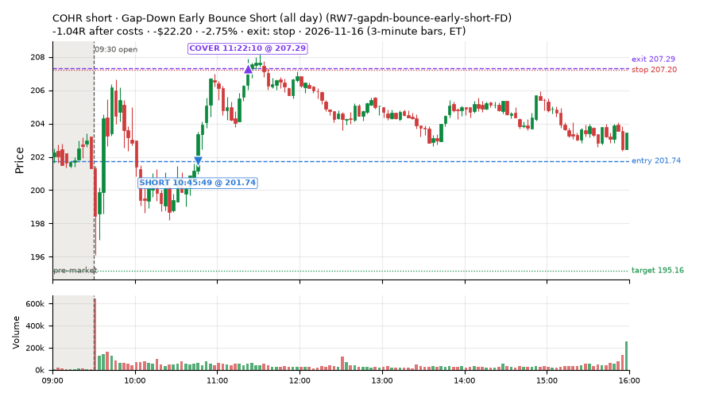
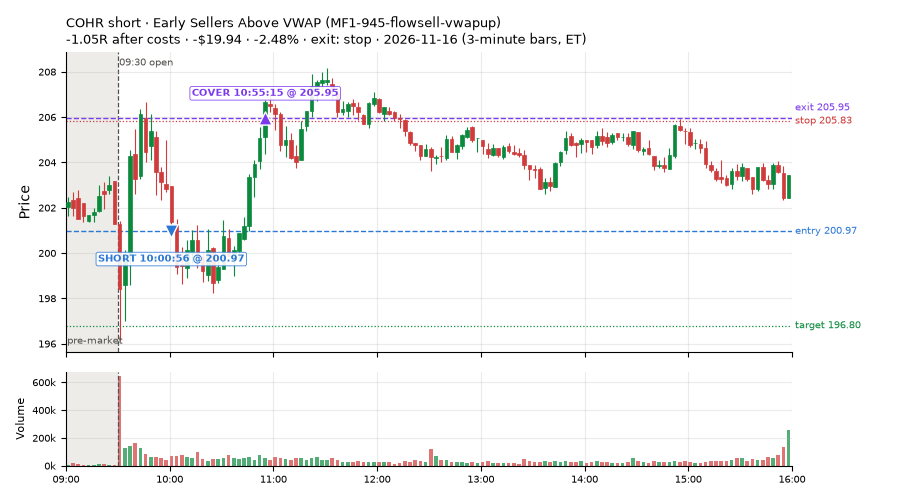
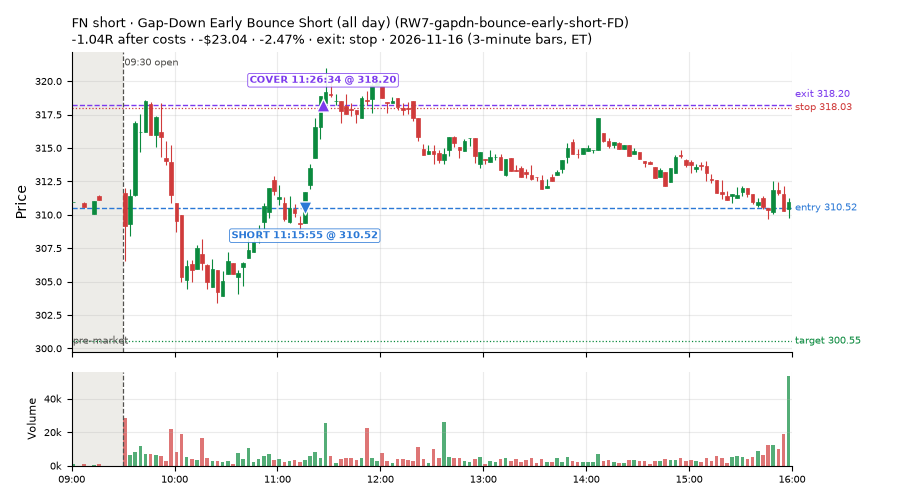
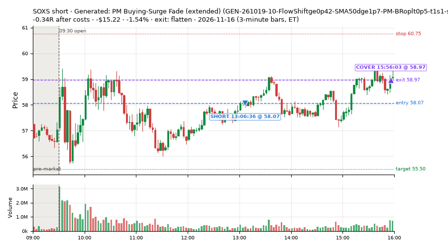
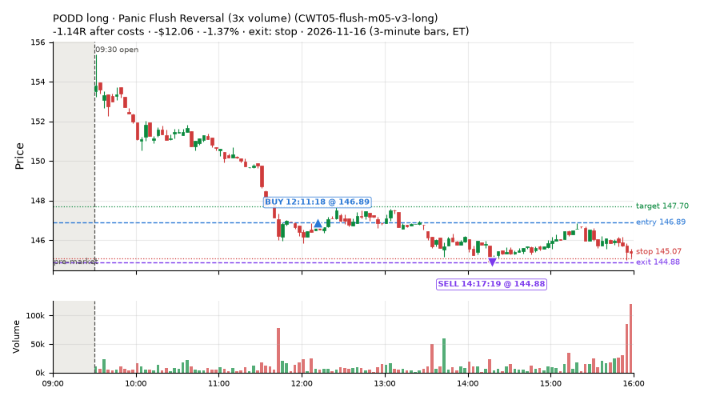

83 trades · win rate 61% · P/L $186.53
PROBATION: no live setup has passed both locked test periods. 10 owner-directed setups added 2026-10-08 (MarcoFlow top 5 + 5 new), untested live. RW6G1 (RW6 + VWAP band guard) added 2026-10-09, probation.

| Symbol | Setup | Side | In | Out | Entry | Exit | Exit reason | % gained | P/L |
|---|---|---|---|---|---|---|---|---|---|
| TEM | Gap-Down Early Bounce Short (all day) (RW7-gapdn-bounce-early-short-FD) | short | 11:36 | 15:37 | 67.13 | 65.25 | target | +2.80% | $26.32 |
| CAI | Gap-Down Early Bounce Short (all day) (RW7-gapdn-bounce-early-short-FD) | short | 11:25 | 13:17 | 21.75 | 21.15 | target | +2.76% | $27.00 |
| TSEM | Gap-Down Early Bounce Short (all day) (RW7-gapdn-bounce-early-short-FD) | short | 11:16 | 15:56 | 137.02 | 133.43 | flatten | +2.62% | $25.13 |
| Symbol | Setup | Side | In | Out | Entry | Exit | Exit reason | % lost | P/L |
|---|---|---|---|---|---|---|---|---|---|
| COHR | RW7-gapdn-bounce-early-short-FD | short | 10:45 | 11:22 | 201.74 | 207.29 | stop | -2.75% | $-22.20 |
| COHR | MF1-945-flowsell-vwapup | short | 10:00 | 10:55 | 200.97 | 205.95 | stop | -2.48% | $-19.94 |
| FN | RW7-gapdn-bounce-early-short-FD | short | 11:15 | 11:26 | 310.52 | 318.20 | stop | -2.47% | $-23.04 |
| SOXS | GEN-261019-10-FlowShiftge0p42-SMA50dge1p7-PM-BRoplt0p5-t1s1-short | short | 13:06 | 15:56 | 58.07 | 58.97 | flatten | -1.54% | $-15.22 |
| PODD | CWT05-flush-m05-v3-long | long | 12:11 | 14:17 | 146.89 | 144.88 | stop | -1.37% | $-12.06 |








Signal to fill: median 2s, 90th percentile 5s (83 trades). Bars close each minute; the order follows the bar close.
Best excursion (MFE): median 0.51R; worst (MAE) median 0.33R. 23% of trades never got +0.25R in our favour; 0 reached +1R and still closed at or below 0.
| Symbol | Setup | Best R | Worst R | Closed R |
|---|---|---|---|---|
| COHR | MF1-945-flowsell-vwapup | +0.56 | -1.02 | -1.05 |
| PODD | CWT05-flush-m05-v3-long | +0.43 | -1.10 | -1.14 |
| SNPS | RW7-gapdn-bounce-early-short-FD | +0.36 | -1.03 | -1.16 |
| TXN | RW7-gapdn-bounce-early-short-FD | +0.22 | -1.04 | -1.09 |
| FN | RW7-gapdn-bounce-early-short-FD | +0.15 | -1.12 | -1.04 |
| Entry time | Trades | Win | Avg R | P/L |
|---|---|---|---|---|
| 09:50-10:30 | 6 | 83% | +0.12 | $19.88 |
| 10:30-11:30 | 22 | 64% | +0.33 | $80.28 |
| 11:30-13:00 | 18 | 61% | +0.23 | $63.72 |
| 13:00-14:00 | 9 | 22% | -0.27 | $-39.42 |
| 14:00-16:00 | 28 | 68% | +0.14 | $62.07 |
| Setup | Trades | Win | Avg R after costs | Adj R (net of SPY) | Avg R ex-market (all sessions) | P/L |
|---|---|---|---|---|---|---|
| Panic Flush Reversal (3x volume) (CWT05-flush-m05-v3-long) | 1.0 | 0% | -1.14 | -0.73 | -0.07 (beta +1.26, n 10) | $-12.06 |
| Generated: PM Lower-Band Dip Buy (uptrend) (GEN-261019-02-BBpctle0p017-SMA20slopege0p46-PM-QQQdn-t05s1-long) | 1.0 | 100% | +0.62 | +0.37 | – | $10.56 |
| Generated: PM Buying-Surge Fade (extended) (GEN-261019-10-FlowShiftge0p42-SMA50dge1p7-PM-BRoplt0p5-t1s1-short) | 3.0 | 33% | -0.11 | -0.20 | – | $-13.87 |
| Generated: Late New-High Short (QQQ down) (GEN-261022-03-NewHOD-Ret15mATRge0p12-SMA20dge0p59-LATE-QQQdn-t05s1-short) | 1.0 | 0% | -0.27 | -0.38 | – | $-5.30 |
| Generated: PM New-Low Buy (failed breakout) (GEN-261022-06-NewLOD-ORBfailUp-BuyPresslem0p49-PM-SPYltm0p5-t1s1-long) | 8.0 | 38% | -0.24 | -0.16 | +0.03 (beta +1.83, n 8) | $-28.79 |
| Generated: PM Prior-Low Bounce Short (GEN-261022-10-EMAdChgge0p15-ORLdistge0p41-PDLdistle0p14-PM-BRoplt0p5-holdtr-short) | 6.0 | 50% | -0.05 | -0.20 | +1.64 (beta +6.62, n 6) | $-2.41 |
| Generated: Lunch Trend Buy (MACD rising) (GEN-261023-10-MACDhge0p12-VWAPcrossesle0-EMAdiffge0p16-LUNCH-BRvwlt0p4-hold-long) | 2.0 | 0% | -0.34 | +0.09 | – | $-12.00 |
| * Oversold Slope Turn with Breadth Turning Up (near-miss) (LD5-st2-breadthup-t05s1-long) | 1.0 | 100% | +0.51 | +1.02 | – | $6.88 |
| Early Sellers Above VWAP (MF1-945-flowsell-vwapup) owner-directed; holdouts once: Sep-Oct +0.169R n86, Apr-Jun -0.050R n429 | 3.0 | 67% | -0.08 | -0.34 | – | $-4.20 |
| Quiet Downtrend Bounce Short (near-miss) (NM-AMS-N1-quiet-morning-short) | 3.0 | 100% | +0.30 | +0.28 | – | $21.34 |
| Afternoon VWAP Reclaim Fade (all day) (NS4-pm-vwap-reclaim-oversold-short-FD) | 1.0 | 100% | +0.54 | +0.47 | -0.61 (beta -2.05, n 18) | $14.89 |
| Gap-Down Early Bounce Short (all day) (RW7-gapdn-bounce-early-short-FD) | 48.0 | 65% | +0.33 | -0.12 | +0.08 (beta -0.45, n 48) | $209.17 |
| Afternoon Blow-off Short (exhaustion_short) failed Apr-Jun holdout: -0.020R/trade over 622 trades | 1.0 | 100% | +0.03 | -0.03 | -0.26 (beta -0.41, n 14) | $1.37 |
| Index Last-Half-Hour Momentum (intraday_momentum) failed Apr-Jun holdout: -0.091R/trade over 147 trades | 4.0 | 100% | +0.01 | -0.09 | -0.05 (beta -2.38, n 10) | $0.95 |
Market direction (SPY, beta 1) accounted for $256.56 of today's $186.53; the rest ($-70.03) came from the setups themselves. Avg R net of SPY: -0.10 (incl. a hedge leg's cost; report only).
22 setups live today. Today: 208 signals, 83 taken, 1 lost because another setup held the symbol (0%). Since 2026-11-12 (3 sessions): 482 signals, 198 taken, 1 lost to other setups (0%). Peak open positions today 54 of 200 slots. Earnings blackout removed 410 symbols before scanning.
Simulated playing time (not live): 284 what-if trades of signals not taken, avg +0.06R, 59% winners; of them 1 lost to another setup (avg +0.83R).
Silent: IDX3-spy075-0955-3x-trail · Starved: MF1-945-flowsell-vwapup
| Prio | Setup | Today sig / taken | Sessions | Signals / taken / trades | Taken/day | Expected/day | Lost to other setups | Lost to (setup n) | Top skip reasons | SIMULATED: not-taken n / avg R / win | Verdict |
|---|---|---|---|---|---|---|---|---|---|---|---|
| 1 | Index Dip Bounce 3 3x S&P IDX3-spy075-0955-3x-trail | 0 / 0 | 3 | 0 / 0 / 0 | 0.00 | – | 0 | – | – | 0 / – | silent no signals in 3 session(s); no expected rate on file |
| 2 | * Oversold Slope Turn with Breadth Turning Up (near-miss) LD5-st2-breadthup-t05s1-long | 1 / 1 | 3 | 1 / 1 / 1 | 0.33 | – | 0 | – | – | 0 / – | slow 1.7 entries/week; ~36 weeks to 60 trades |
| 3 | Generated: Morning Overbought Coil Buy GEN-261029-05-BearDiv-RSI14ge78-Compress6le0p091-AM-BRopgt0p5-t05s05-long | 0 / 0 | 1 | 0 / 0 / 0 | 0.00 | – | 0 | – | – | 0 / – | quiet - wait no signals in 1 session(s); too early to tell |
| 4 | Generated: Late-AM Strong-Stock Dip Buy GEN-261021-05-RSIslopelem14-ORHdistge0p42-LAM-BRvwlt0p3-t1s05-long | 0 / 0 | 1 | 0 / 0 / 0 | 0.00 | – | 0 | – | – | 0 / – | quiet - wait no signals in 1 session(s); too early to tell |
| 5 | NS2 Short, SPY Up 0.5%, Not Friday (near-miss) NM-RWN4-ns2-spyup05-notfri-short | 0 / 0 | 3 | 105 / 32 / 32 | 10.67 | – | 0 | – | per-setup cap 54, spread / quote / size 14, not shortable / shorts off 4 | 73 / +0.34R / 90% | ok 53.3 entries/week |
| 6 | Quiet Downtrend Bounce Short (near-miss) NM-AMS-N1-quiet-morning-short | 3 / 3 | 3 | 4 / 4 / 4 | 1.33 | – | 0 | – | – | 0 / – | slow 6.7 entries/week; ~9 weeks to 60 trades |
| 7 | Generated: Open Range-Expansion Short GEN-261029-09-RangeExpge1p6-Since950ATRlem0p43-OPEN-BRvwgt0p5-hold-short | 0 / 0 | 1 | 0 / 0 / 0 | 0.00 | – | 0 | – | – | 0 / – | quiet - wait no signals in 1 session(s); too early to tell |
| 8 | Generated: Midday VWAP Loss Buy (fading) GEN-261020-06-VWAPxDn-Slope6lem0p011-BarsSinceHODge35-MID-BRoplt0p5-holdtr-long | 0 / 0 | 1 | 0 / 0 / 0 | 0.00 | – | 0 | – | – | 0 / – | quiet - wait no signals in 1 session(s); too early to tell |
| 9 | Generated: PM Lower-Band Dip Buy (uptrend) GEN-261019-02-BBpctle0p017-SMA20slopege0p46-PM-QQQdn-t05s1-long | 2 / 1 | 1 | 2 / 1 / 1 | 1.00 | – | 0 | – | other 1 | 1 / +0.42R / 100% | slow 5.0 entries/week; ~12 weeks to 60 trades |
| 10 | Generated: Lunch Trend Buy (MACD rising) GEN-261023-10-MACDhge0p12-VWAPcrossesle0-EMAdiffge0p16-LUNCH-BRvwlt0p4-hold-long | 4 / 2 | 1 | 4 / 2 / 2 | 2.00 | – | 0 | – | spread / quote / size 1, other 1 | 2 / -0.16R / 50% | slow 10.0 entries/week; ~6 weeks to 60 trades |
| 11 | Generated: PM New-Low Buy (failed breakout) GEN-261022-06-NewLOD-ORBfailUp-BuyPresslem0p49-PM-SPYltm0p5-t1s1-long | 8 / 8 | 1 | 8 / 8 / 8 | 8.00 | – | 0 | – | – | 0 / – | ok 40.0 entries/week |
| 12 | Generated: Late Gap-Down Oversold Buy GEN-261028-04-ORBfailUp-RSI14le22-Gaplem1p2-LATE-BRvwgt0p5-holdtr-long | 0 / 0 | 1 | 0 / 0 / 0 | 0.00 | – | 0 | – | – | 0 / – | quiet - wait no signals in 1 session(s); too early to tell |
| 13 | Generated: Late New-High Short (QQQ down) GEN-261022-03-NewHOD-Ret15mATRge0p12-SMA20dge0p59-LATE-QQQdn-t05s1-short | 3 / 1 | 1 | 3 / 1 / 1 | 1.00 | – | 0 | – | not shortable / shorts off 2 | 2 / +0.48R / 100% | slow 5.0 entries/week; ~12 weeks to 60 trades |
| 14 | Generated: PM Prior-Low Bounce Short GEN-261022-10-EMAdChgge0p15-ORLdistge0p41-PDLdistle0p14-PM-BRoplt0p5-holdtr-short | 9 / 6 | 1 | 9 / 6 / 6 | 6.00 | – | 0 | – | spread / quote / size 3 | 3 / +0.33R / 100% | ok 30.0 entries/week |
| 15 | Generated: Lunch Failed Breakdown Buy GEN-261020-05-ORBfailDn-VWAPcrossesge4-SMA20dlem0p31-LUNCH-SPYgt0p25-holdtr-long | 0 / 0 | 3 | 79 / 37 / 37 | 12.33 | – | 0 | – | per-setup cap 30, other 7, spread / quote / size 5 | 42 / -0.50R / 14% | ok 61.7 entries/week |
| 16 | Generated: PM Buying-Surge Fade (extended) GEN-261019-10-FlowShiftge0p42-SMA50dge1p7-PM-BRoplt0p5-t1s1-short | 19 / 3 | 1 | 19 / 3 / 3 | 3.00 | – | 1 | GEN-261023-10-MACDhge0p12-VWAPcrossesle0-EMAdiffge0p16-LUNCH-BRvwlt0p4-hold-long 1 | not shortable / shorts off 11, spread / quote / size 3, symbol held by another setup 1 | 16 / -0.43R / 19% | ok 15.0 entries/week |
| 17 | Early Sellers Above VWAP MF1-945-flowsell-vwapup | 10 / 3 | 3 | 22 / 3 / 3 | 1.00 | 5.33 | 0 | – | spread / quote / size 17, not shortable / shorts off 1, other 1 | 19 / +0.37R / 47% | starved 1.00 entries/day vs ~5.33 expected |
| 18 | Afternoon VWAP Reclaim Fade (all day) NS4-pm-vwap-reclaim-oversold-short-FD | 2 / 1 | 3 | 30 / 18 / 18 | 6.00 | 3.57 | 0 | – | not shortable / shorts off 5, other 4, spread / quote / size 3 | 12 / -0.41R / 33% | ok 30.0 entries/week |
| 19 | Panic Flush Reversal (3x volume) CWT05-flush-m05-v3-long | 1 / 1 | 3 | 20 / 10 / 10 | 3.33 | – | 0 | – | spread / quote / size 4, other 4, price through stop/target 1 | 10 / +0.52R / 100% | ok 16.7 entries/week |
| 20 | Afternoon Blow-off Short exhaustion_short | 11 / 1 | 3 | 35 / 14 / 14 | 4.67 | 12.12 | 0 | – | not shortable / shorts off 17, other 4 | 21 / -0.04R / 38% | ok 23.3 entries/week |
| 21 | Index Last-Half-Hour Momentum intraday_momentum | 4 / 4 | 3 | 10 / 10 / 10 | 3.33 | 2.37 | 0 | – | – | 0 / – | ok 16.7 entries/week |
| 22 | Gap-Down Early Bounce Short (all day) RW7-gapdn-bounce-early-short-FD | 131 / 48 | 1 | 131 / 48 / 48 | 48.00 | 59.92 | 0 | – | per-setup cap 59, spread / quote / size 9, not shortable / shorts off 8 | 83 / +0.14R / 65% | ok 240.0 entries/week |
Every trade is attached as a CSV you can open and edit in Excel or Google Sheets. Live page: https://misiti15.github.io/MCF/live/